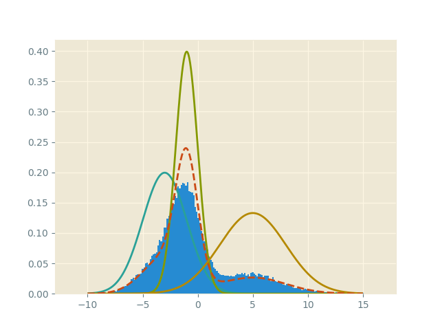
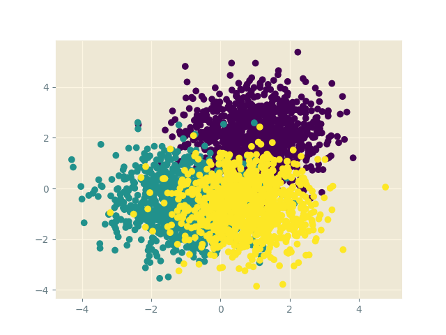
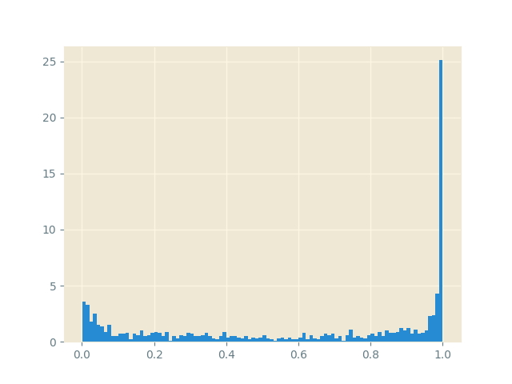

Note: This blog post is still a rough draft. Read on with caution.
Bayesian methods in deep learning seem to be a hot topic these days, and that’s good for me since Bayesian methods are my favorite part of machine learning. The basic idea behind these methods is simple– a neural network is merely a family of very complicated functions parameterized by a collection of weights \(w_{\text{net}}\). Given training data we tend to use optimization methods to seek out the MLE weights for this family \(w_{\text{mle}}\) guided by some loss function.
In the Bayesian framework we put a prior on the (restricted) space of functions that these neural networks belong to, and use Bayesian inference techniques to establish a posterior distribution over this space given the training data. Usually, this prior is described as a distributional prior over the weight-space \(p(w)\) and we are seeking the posterior \(p(w|\mathcal{D})\).
Why would this be ever beneficial? The key equation to keep in mind is the Bayesian average:
\[ p_\text{bayes}(y|\mathcal{D}) = \int_{w_{\text{net}}\in \{\text{weight space\}}} p(y|w_\text{net},\mathcal{D})\cdot p(w_\text{net}|\mathcal{D}) \, dw_\text{net} \]
In classical deep learning, the output distribution is given by a “single network” \(p(y|w_\text{mle}, \mathcal{D})\). The core question becomes “how confident are you that that one model is truly correct?” In the Bayesian averaging model, the output distribution \(p_\text{bayes}(y|\mathcal{D})\) is a weighted ensemble of an infinite number of neural networks, where each network is weighted according to the quality of the distribution weights \(w_\text{net}\). In this way, we don’t have to choose– given a prior, the averaging process takes into account all the possible neural networks that could have given us good results as well, but may not be as confident as our MLE estimate network.
But now we have a new technical problem to deal with– how do we determine the posterior \(p(w_\text{net}|\mathcal{D})\)? By Bayes rule, we are reduced to computing the normalizing factor of the product
\[ p(w_\text{net}|\mathcal{D}) \propto f_\text{nnet}(\mathcal{D}|w_\text{net}) p(w_\text{net}) \]
where \(f_\text{nnet}(-|w_\text{net})\) is a fixed architecture of neural network that we are using to model our function space. Computing this normalizing constant is absurdly difficult! In fact, it usually is so difficult that we give up on this entirely. Research in Bayesian inference often looks at ways to avoid this computation by using the right-hand side of the proportionality directly without normalization.
There are two approaches one could think of to get at a probability distribution without analytic computation– the first is to simulate sampling from it. Then the normalization is simply a count, which is trivial. The second is to compare your distribution to another known, simpler family of distributions and compare via ratios. Choosing ratios cleverly removes the dependence on the normalization factor, but now we have to deal with two families of distributions that might be vastly different.
The first idea leads to Markov chain Monte Carlo (MCMC), and the second leads to the wonderful world of variational inference. Which would you choose? It depends on the problem/tradeoff you’re willing to make. The quick slogan to keep is “MCMC is slow but low-bias, VI is fast but can be incredibly biased”. Both approaches can suffer from horrific variance issues, which can be tempered with a variety of techniques such as Rao-Blackwellization and control variates. I might address these in a future post.
For now, I want to in this post talk about a first-pass attempt to combine MCMC and stochastic variational inference. To motivate this, we need to delve into some math.
markov processes
What is a Markov chain/process? It’s a discrete (finite)-space dynamical system, i.e. a system that evolves over time. However, the system evolves probabilistically, meaning the transition from a state \(x_i\mapsto x_j\) is not deterministic, but instead given by a probability \(p_{ij}\). Taken together, we see that the evolution of the dynamical system is determined by a evolution/transition matrix \(A=(p_{ij})_{i, j\in\{\text{states}\}}\).
It is interesting to say something about what happens in the long-term limit as the dynamical system evolves. If each node gets visited an infinite number of times as \(\text{time}\to\infty\), then we call the system ergodic, and the average amount of time a person walking around the dynamical system spends at each state gives rise to a probability distribution called the stationary distribution. In equations we have
\[ p_\text{stationary} = \lim_{t\to\infty} A^t x_\text{init} \]
where \(x_\text{init}\) is any randomly-initialized state vector for the system. It is clear that from the equation above the stationary distribution vector is an eigenvector for the evolution matrix.
This suggests then a really good way to produce samples from the distribution \(p_\text{stationary}\): walk along the dynamical system according to the evolution matrix for a long time, and eventually your path simulates sampling from \(p_\text{stationary}\)! It was a great triumph of mathematical statistics that it was discovered that one could reverse this process to produce from any distribution \(p\) a dynamical Markov process whose stationary distribution is \(p\) itself: \(p=p_\text{stationary}\). This is MCMC!
ito-markov processes
However, the world of dynamical systems are not restricted to discrete spaces. Indeed, a very interesting class of dynamical systems are those over continuous-time, continuous-space systems. Such systems can be described by an evolving stochastic differential equation, the simplest of which are built from a deterministic time-component and the simplest stochastic process, a Brownian-Wiener process:
\[ dx_t = a_t dt + b_t dB_t \]
This is called an Ito-Markov process. Just like for Markov chains, this dynamical system has an underlying evolution/transition equation, which is given by a Fokker-Planck equation (computed by the Ito-Stratonovich lemma):
\[ \partial_t p = -\partial_x(a_t p) + \frac{1}{2} \partial^2_x (b_t^2 p) \]
The Fokker-Planck equation gives a probabilistic interpretation of the dynamical system– it describes a continually evolving family of probability distributions. The stationary distribution is a steady-state for the system, and is characterized by the equation \(\partial_t p_\text{stationary} = 0\). In this case,
\[ 0 = -a_t\partial_x p + \frac{1}{2} b_t^2\partial^2_x p \]
We get something resembling the wave equation. This PDE perspective on Ito-Markov processes is useful in machine learning, for example with the Stein’s method-based variational inference techniques. However, for stochastic gradient Langevin dynamics, we refer back to the SDE perspective. In this way, we have a continuous distribution \(p\) that we’d like to exhibit as the stationary distribution of some stochastic dynamical system, and as in MCMC, we’d like to sample from that dynamical system directly. It turns out that this is slightly easier than in discrete-time MCMC.
langevin dynamics
Suppose that we have an energy perspective on the distribution so that
\[ p(x) \propto e^{-\beta E(x)} \]
(Note: This can always be done). Then we are seeking \(a_t\) and \(b_t\) so that \(a_t p = \frac{1}{2} b_t^2\partial_x p\) (one of the partials is removed as there is no longer any time-dependence!). Plugging in the Boltzmann expression of \(p\) (and ignoring the normalizing constant, because they cancel out on both sides!) we are reduced to
\[ a_t \cdot e^{-\beta E(x)} = -\frac{1}{2}\beta\cdot b_t^2\cdot \partial_x E(x) e^{-\beta E(x)} \]
Letting \(a_t = -\partial_x E(x)\) and \(b_t = \sqrt{2\beta^{-1}}\) gives the equality above! Hence we have rediscovered the Langevin stochastic dynamical equation
\[ dx_t = \frac{1}{\beta}\partial_x \log{p} \cdot dt + \sqrt{2\beta^{-1}} dB_t \]
Upshot: Simulating this dynamical system is over the long-run, equivalent to sampling from our distribution \(p\), as the Fokker-Planck equation for this SDE has \(p\) as our stationary distribution \(p=p_\text{stationary}\)! To turn this into something that looks like stochastic gradient descent, we use the Euler-Maruyama discretization technique to get a gradient descent update rule:
\[ x_{t+1} \leftarrow x_t + \frac{1}{\beta}\partial_x \log{p(x_t)}\cdot\Delta t + \sqrt{2\Delta t\beta^{-1}} \eta \]
where \(\eta \sim N(0, 1)\) is a Gaussian sample. Hence running this iteratively, we can from an initial seed \(x_0\) get a sequence of samples from our desired distribution \(p\) via gradient descent updates! This is stochastic gradient Langevin dynamics (SGLD).
an example
Lets see an example of SGLD in action by sampling from a Gaussian mixture model. Sampling from this is easy when treating the model hierarchically as a categorical-Gaussian mixture, but lets amuse ourselves by using SGLD. Note that all we care about from our model is the log-likelihood \(\log{p(x)}\)! In Python our log-likelihood is given by
import jax
import jax.numpy as np
@jax.jit
def gaussian(x, mean=0, std=1):
energy = -(x - mean) ** 2 / (2 * std ** 2)
return 1.0 / np.sqrt(2 * np.pi * std ** 2) * np.exp(energy)
@jax.jit
def log_mixture(x):
weights = [0.3, 0.5, 0.2]
mixture_1 = gaussian(x, mean=-3, std=2)
mixture_2 = gaussian(x, mean=-1, std=1)
mixture_3 = gaussian(x, mean=2, std=3)
return np.log(weights[0] * mixture_1 + weights[1] * mixture_2 + \
weights[2] * mixture_3)Using the autodifferentiation library JAX, we easily get the gradient \(\partial_x \log{p(x)}\) via the jax.grad function:
SGLD is then just the iterative process above:
def sgld_update(key, grad, x, beta=1, lr=0.01):
noise = jax.random.normal(key)
grad_term = grad(x) * lr / beta
gaus_term = np.sqrt(2 * lr / beta) * noise
return grad_term + gaus_termWe run the loop via
n_samples = 100000
samples = []
x = 0.0
lr = 0.1
for i in range(n_samples):
key, subkey = jax.random.split(key)
upd = sgld_update(subkey, grad_log_p, x, lr=lr)
x += upd
samples.append(x)
samples = onp.asarray(samples)For this example, we get the sampling histogram

Here, the dotted red line is the mixture distribution.
bayesian neural network
That was cute. Let’s use SGLD to train a simple Bayesian neural network. We will again use a Gaussian mixture model as our data. (The cluster ordering is purple, teal, yellow).

We build a simple 2-layer neural network to solve this classification problem \(\text{2D-point}\to\text{class label}\):
import torch
import torch.nn as nn
import torch.nn.functional as F
class Net(nn.Module):
def __init__(self):
super(Net, self).__init__()
self.fc1 = nn.Linear(2, 5)
self.fc2 = nn.Linear(5, 3)
def forward(self, x):
x = self.fc1(x)
x = F.relu(x)
x = self.fc2(x)
return F.log_softmax(x, dim=1)In Pytorch, we can implement a custom optimizer that performs SGD with an added step– add on some scaled Gaussian noise in order to allow the dynamics of the gradient descent process to search around the posterior space of weights. Following the source on the SGD optimizer we have
# SGLD optimizer
class SGLD(torch.optim.Optimizer):
def __init__(self, params, lr=1e-3):
defaults = {"lr": lr}
super(SGLD, self).__init__(params, defaults)
def step(self, lr=None, beta=1.0) -> None:
for group in self.param_groups:
if lr:
group["lr"] = lr
for p in group["params"]:
if p.grad is None:
continue
d_p = p.grad.data
# add gaussian noise
noise = np.sqrt(2 / (group["lr"] * beta)) * torch.randn_like(d_p)
p.data.add_(-group["lr"], d_p / beta + noise)It is then simple to run the gradient descent optimizer using the standard loop
sgld_optimizer = SGLD(model.parameters(), lr=1e-3)
n_epochs = 1000
for epoch in range(n_epochs):
sgld_optimizer.zero_grad()
# run batch into network and propagate gradients
preds = model.forward(data)
loss = F.nll_loss(preds, labels)
loss.backward()
sgld_optimizer.step()As the optimizer performs as step, the weights are perturbed to walk around the posterior weight space \(p(w|\mathcal{D})\) just like in MCMC, but with the scalability of SGD! We evaluate the model by testing the probability predictions for a chosen point on the neural network models chosen by the optimizer. For example, by choosing the point \((2, 2)\) we see that the model is better able to capture its (un)certainty around the first cluster.

closing
SGLD is the first of a series of modern scalable Bayesian inference methods. Other variations of the idea try to add many of the standard provisions of SGD, such as Nesterov momentum and adaptive scaling. Other directions to this theme involve importing the ideas of symplectic geometry to this setting, in the guise of Hamiltonian Monte Carlo, Riemannian MC, etc.
Bayesian methods are notorious for being forboding to many data scientists because of the difficulty of scaling to large distributed systems and the higher mathematical prerequisites to understanding it’s inner workings. However, I hope that more expository material will come out that assist in the propagation and proliferation of these ideas. The future of machine learning and AI might rely on these very techniques.